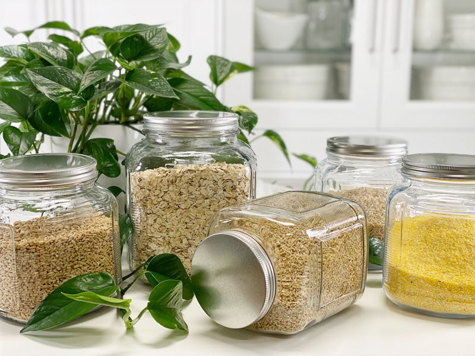

Cooking with Whole Grains
Grains are the world’s single most significant food source. Despite widespread consumption, the health effects of grains are quite controversial. Some think they are an essential component of a healthy diet, while others believe they cause harm. Then again, name any single ingredient, and I can find a case for or against it.

I believe that food can either be a person’s medicine or poison, and I am not just referring to junk food. This goes for healthy foods as well. We are all genetically unique and beautiful inside and out. The idea that each of us has a unique nutrition blueprint within our genes is a delicious concept to me. The challenge is learning how to eat to benefit us as individuals based on our current health, genetics, and lifestyle (movement, stress levels, emotions, etc.). This is a soapbox topic that I can spend hours on, but for the sake of your time (which I much appreciate), I will acknowledge that not all grains are good for you.
Not All Grains Are Created Equal
Refined carbs are also known as simple carbs or processed carbs. They have been stripped of almost all fiber, vitamins, and minerals. The body digests them quickly and they have a high glycemic index, leading to rapid spikes in blood sugar and insulin levels after meals. A few examples of refined grains are corn chips, bread, and pasta.
There are two main types of refined carbs:
- Sugars: Refined and processed sugars, such as sucrose (table sugar), high fructose corn syrup, and agave syrup.
- Refined grains: These are grains that have had the fibrous and nutritious parts removed. The most common is white flour made from refined wheat.
Grains fall into three different main categories: whole, refined, and enriched. Below I will briefly break down what each one means. It’s wise to understand the ingredients we use, because that knowledge makes a huge difference when we aim to fill our bodies with nutrient-dense foods.
Whole Grains
- Whole grains are made up of the entire grain, including; the bran, which contains fiber, B vitamins, and antioxidants; the germ, which includes healthy fats, minerals, B vitamins, and some protein; and endosperm, the largest part of the grain, composed of mostly starch.
- Examples of whole grains are brown rice, whole wheat, oats, and quinoa.
Refined Grains
- The refining of grains removes the germ and bran, which improves the texture, palatability, and shelf life of grains and grain products.
- The downside to the refining process is that the fiber and nutrients, like B vitamins and iron, are lost, causing many nutritional deficiencies and diseases.
- Examples of refined grains include pasta, white bread, and white rice.
Enriched Grains and Fortification
- To solve the deficiency problem, in the 1940s, many governments required refined grains to be enriched with specific B vitamins and iron to bring the levels back up to standard. Known as fortification, this process sometimes added more nutrients than what occurs naturally.
- Examples of enriched and fortified grains now include pasta, bread, cereal, and crackers.
Types of Whole Grains
Whole-grain kernels have three parts: Bran. This is the hard, outer shell. It contains fiber, minerals, and antioxidants. Endosperm. The middle layer of the grain is mostly made up of carbs. Germ. This inner layer has vitamins, minerals, protein, and plant compounds.
- Grains containing gluten: wheatberries, spelt, Kamut, farro, and durum, (plus products like bulgur and semolina), barley, rye, triticale.
- Gluten-free grains: amaranth, brown rice, buckwheat, corn, Job’s Tears, millet, oats, polenta, rice, sorghum, teff, quinoa, wild rice (aquatic grass). Oats are inherently gluten-free but are frequently contaminated with wheat during growing or processing. Several companies offer pure, uncontaminated oats, but make sure the package indicates that.
Shopping for Whole Grains
Now that we have a clear understanding of the different types of grains and how they are processed, we want to make sure that we are getting whole-grain foods when we shop for them. The bottom line… you have to read the ingredient list. Don’t rely on packaging claims on the labels (which are filled with marketing tactics)–be skeptical of words such as multigrain, ancient grains, all-natural, organic, or made with whole grains. Flip that puppy over and go directly to the ingredient list. You want it to read “whole grain [insert name of grain].”
Health Benefits of Whole Grains
- Whole grains contain fiber, vitamins, and minerals.
- They are resistant starches, known to help control blood sugar, and promote the growth of healthy bacteria in the gut. To learn more about resistant starches, click (here).
- They are loaded with nutrients, essential fatty acids, B vitamins, minerals, and macronutrients.
- To get the most nutrients, always aim to eat whole grains.
Cooking Methods to Increase Nutrients
- Rinse the grains: It’s important to rinse away dust, grit, and saponins (which many grains have) that can cause digestive upset. Use a fine-mesh strainer and clean water.
- Soaking: Place the rinsed grains into a glass bowl and add 2 Tbsp of raw apple cider vinegar, along with fresh water. Soaking can help to rid the grain of anti-nutrients and shorten cooking time.
- Cooking with kombu seaweed: I always add a strip of kombu seaweed when cooking grains, beans, and legumes. Please read about the importance (here).
- Sprouting: Some grains, such as quinoa, will sprout reasonably quickly, within several hours or 1-2 days.
© AmieSue.com